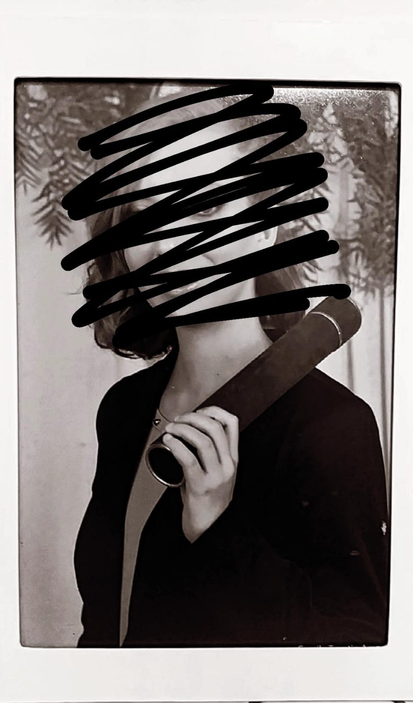

Possuo escolaridade e ensino médio completo, e atualmente, estou cursando Análise e Desenvolvimento de Sistemas pela Uninter.
Possuo conhecimento intermediário do inglês, e estou aprendendo novos idiomas, como o espanhol e o italiano. Nestes dois últimos casos, possuo conhecimento de nível iniciante.
